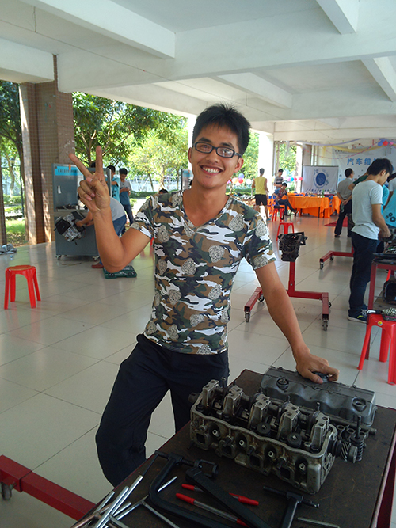

汽车美容店工作心得
在我院机电系的大力支持，以及各老师的帮助下，汽车美容店于2012年9月份重新开始正常营业。
很感谢师兄和老师们对我们的信任，将汽车美容店交由我们几个人来管理，经过这一年下来的锻炼，我也从中学到了不少的东西。为了能让自己管理好整个汽车美容店，我从图书馆借了一些管理方面的书籍，以及选修了一些关于管理学的选修课，以此来弥补自己在管理方面的不足。经过一年下来，自己真正学到不少的知识，不论是本专业的还是管理学上的，都有了一定的进步。为了能与其他同学沟通并了解他们，我也阅览了一些心理方面的书籍，以便能与大家更好的沟通。
从新生入学开始，我就开始筹划着怎么去招人，联络了几个助班，又通过和大一新生各班的班长的交谈，从他们那里了解了大一新生的情况，以便从中挑取优秀的同学。从中也懂得了该怎么去充分利用身边资源，以及，如何与他人很好的沟通。
在对新成员的培训中，我也发现了一些问题，尽管是一些小事，但往往却也能反映出事情性质，及时控制，才能走的更好。在刚开始时，大家的积极性都很高，再后来的几次，就已经有人开始不愿动手，后来通过经常考核，监督大家多动手操作，并只有操作熟练的人才能学习另一项技术，激励大家多操作。
在管理美容店的整个过程中，我没有因为有人做的不好而骂他们，或是发脾气，因为他们在我心里都是相互学习，相互帮助的朋友，所以，即便在以后出去工作了，仍然是要如此去对待他人。也只有如此，你才能获得他人对你伸出的援助之手。而对于参与汽车美容店工作的同学，我也总是要求他们要学习好，即便是来汽车美容店值班，也不要放过可以学习的时间。同时，这样也时刻提醒着我要注意学习，多学习。
现在的汽车美容店还正处于有待完善的阶段，很感谢系里对我们汽车美容店的重视，不断的出资来完善我汽车美容店，与去年相比，美容店已经有了很大的进步，不单增加很多项目，也购进了很多精品。而管理层有了细分，分别为人力资源、财务、人事、技术、仓管五个管理模块，大家分工合作，也使得工作效率有所提高。也让我懂的了个人的力量永远不及团结的力量，这一年下来我在管理汽车美容店的过程中，为了管理好它，也使自己不断的去阅读管理学上知识，无形中，日积月累，学到了不少的管理知识！
